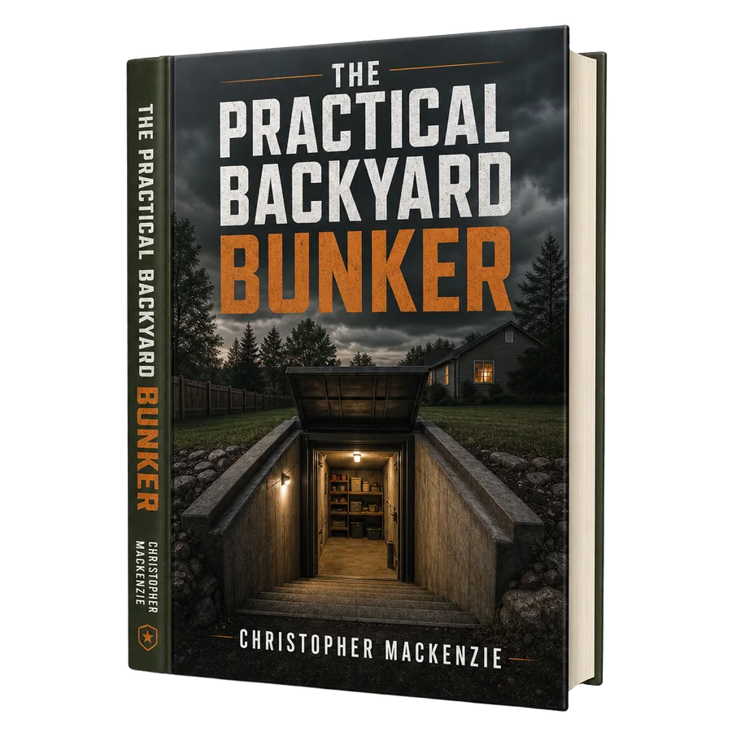

Book review · Self-reliance & preparedness
The Practical Backyard Bunker Review
Looking for an honest The Practical Backyard Bunker review? Here is an independent overview of Christopher Mackenzie's book: what it is, who it may suit, what to check before you buy, and what to verify before you ever dig.

The Practical Backyard Bunker Review: Book at a Glance
This The Practical Backyard Bunker review looks at a book by Christopher Mackenzie, an author who publishes practical guides on self-reliance, preparedness and intentional living. The cover promises a down-to-earth approach to a backyard shelter: a below-ground concrete entrance, a stocked storage room and a quiet suburban setting.
| Title | The Practical Backyard Bunker |
|---|---|
| Author | Christopher Mackenzie |
| Category | Self-reliance and preparedness guide |
| Topic | Backyard bunker and shelter planning |
| Format, price and availability | Listed on the author's website. Check there for current details. |
| Our rating | Not rated. We do not publish star scores for books we cannot verify, and we do not show invented customer reviews. |
What The Practical Backyard Bunker Promises
The title and cover set a clear expectation: practical. Rather than a survival-fantasy manual, the framing points toward planning a shelter that an ordinary homeowner could realistically think through. Based on the cover and the author's focus on preparedness, readers can reasonably expect the book to deal with themes like these:
- Why people consider a backyard shelter and what problems it is meant to solve.
- Planning and layout: entrance, storage, living space and how the structure relates to the home.
- Supplies and storage thinking, such as shelving and organization as shown on the cover.
- Practical priorities rather than purely theoretical preparedness advice.
We have not independently confirmed the exact chapter list. Use the author's page to check the table of contents and any sample material before you decide.
Who Is The Practical Backyard Bunker For?
May suit you if…
- You are researching backyard shelters and want a structured starting point.
- You already follow self-reliance or home-preparedness topics.
- You prefer a practical, plain-language tone over technical engineering text.
- You want something to read before talking to a contractor or engineer.
May not suit you if…
- You need site-specific structural, soil or drainage engineering.
- You want permit or code guidance for your exact city or county.
- You expect a complete construction manual that replaces licensed professionals.
- You are only curious about the topic and do not plan to build.
Strengths and Considerations
What looks appealing
- Clear promise. A "practical" angle is helpful in a niche that often leans on fear or hype.
- Focused topic. A single-subject book is easier to evaluate than a broad prepping collection.
- Established author presence. The author runs a dedicated website with related guides.
What to weigh
- Limited public detail. Independent reader reviews, sample pages and a full table of contents are worth checking before you buy.
- Not a substitute for professionals. Underground construction is regulated and risky; a book cannot account for your soil, water table or local code.
- Verify refund terms. Confirm the seller's refund policy on the checkout page before purchasing.
Before You Build a Backyard Bunker: General Checklist
Whatever book you read, these are the questions that matter most before any digging. This is general information, not advice for your property.
- Permits and zoning. Ask your local building department what applies to excavation, below-grade structures and accessory buildings.
- Call before you dig. In the United States, dial 811 to have buried utilities marked before any excavation.
- Soil and water. Soil type, drainage and the water table affect whether an underground space stays dry and stable.
- Structural design. Walls, roofs and entrances carry large loads. Have a licensed engineer review any plan.
- Ventilation and air quality. Enclosed spaces need properly designed fresh-air supply. This is a life-safety issue.
- Emergency exits. Plan a safe way out that does not depend on a single point of failure.
- Insurance and resale. Check how a below-ground structure could affect homeowner's insurance and property value.
How to Evaluate a Bunker Book Before You Buy
- Read the full table of contents and any sample chapter on the author's site.
- Look for reviews on independent retailers rather than only on the seller's own page.
- Check the author's background and how clearly the book separates general guidance from engineering requirements.
- Confirm format (print, ebook or both), price, and the refund policy.
- Compare with at least one or two other shelter-planning or home-preparedness guides.
Our Take on The Practical Backyard Bunker
From what is publicly available, The Practical Backyard Bunker positions itself as an approachable, no-hype guide to a niche subject. That is a reasonable pitch, and it will likely interest readers already exploring home preparedness. The honest limits are the same for any book on this topic: it cannot replace permits, local codes or a licensed engineer, and you should check samples and refund terms before purchasing.
We will update this page if we publish a hands-on, page-by-page review. Until then, treat it as an informed overview, not a verified-reader verdict.